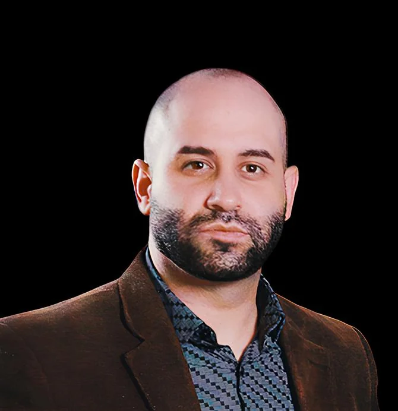

Advogado em Guarapuava
Atendimento online ou presencial. Entre em contato para mais informações.
Principais áreas de atuação
Advogado trabalhista em Guarapuava. Atendimento para casos de trabalho sem registro em carteira, FGTS não depositado, verbas rescisórias incorretas, demissões indevidas e outros direitos trabalhistas violados. Defenda seus direitos com orientação jurídica especializada.
Advogado previdenciário em Guarapuava. Atendimento para requerimentos administrativos e judiciais de aposentadoria, benefícios por incapacidade, salário-maternidade e outros direitos previdenciários junto ao INSS. Assessoria completa para garantir o seu benefício com segurança.
Advogado especializado em benefício assistencial (BPC/LOAS) para idosos a partir de 65 anos e pessoas com deficiência ou incapacidade. Realização de requerimentos administrativos ou judiciais, com assessoria completa para acesso ao benefício junto ao INSS.
Advogado de Direito do Consumidor em Guarapuava. Atendimento jurídico em casos de práticas abusivas, produtos com defeito, serviços inadequados e reparação de danos materiais e morais. Defesa dos direitos do consumidor com foco em soluções rápidas e eficazes.
Advogado de Direito de Família e Sucessões em Guarapuava. Atendimento jurídico em pensão alimentícia, divórcios consensuais e litigiosos, além de inventários judiciais e extrajudiciais. Suporte completo para resolver questões familiares com agilidade, sigilo e segurança jurídica.
Advogado Cível em Guarapuava. Atendimento jurídico em contratos, indenizações, cobranças e demais questões de direito civil. Assessoria completa para resolução de conflitos e defesa dos seus direitos com segurança e eficiência.
Advogado em Guarapuava. Atendimento para pessoas físicas e jurídicas que desejam apenas sanar dúvidas ou obter orientações jurídicas. Consultas com hora marcada, oferecendo análise preventiva e soluções personalizadas para cada situação legal.
Vamos conversar sobre o seu caso?
Clique no botão abaixo e envie uma mensagem via WhatsApp.